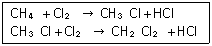

가스기능사 (2008-03-30 기출문제)
1과목: 가스안전관리
1. 겨울철 LP가스용기에 서릿발이 생겨 가스가 나오지 않을 경우 가스를 사용하기 위한 가장 적절한 조치는?
- 연탄불로 쪼인다.
- 용기를 힘차게 흔든다.
- 열습포를 사용한다.
- 90℃ 정도의 물을 용기에 붓는다.
(정답률: 95%)

2. 품질검사 기준 중 산소의 순도측정에 사용되는 시약은?
- 동·암모니아 시약
- 발연황산 시약
- 피로갈롤 시약
- 하이드로 썰파이드 시약
(정답률: 68%)
3. 가스 중독의 원인이 되는 가스가 아닌 것은?
- 시안화수소
- 염소
- 아황산가스
- 수소
(정답률: 76%)
4. 고압가스 용기 중 동일 차량에 혼합 적재하여 운반하여도 무방한 것은?
- 산소와 질소, 탄산가스
- 염소와 아세틸렌, 암모니아 또는 수소
- 동일 차량에 용기의 밸브가 서로 마주보게 적재한 가연성가스와 산소
- 충전용기와 위험물안전관리법이 정하는 위험물
(정답률: 82%)
5. 도시가스의 가스발생설비, 가스정제설비, 가스홀더 등이 설치된 장소 주위에는 철책 또는 철망 등의 경계책을 설치하여야 하는데 그 높이는 몇 m 이상으로 하여야 하는가?
- 1
- 1.5
- 2.0
- 3.0
(정답률: 63%)
6. 도시가스 사용시설 중 20A가스관에 대한 고정 장치의 간격으로 옳은 것은?
- 1m
- 2m
- 3m
- 5m
(정답률: 72%)
7. LP가스용기 충전시설 중 지상에 설치하는 경우 저장탱크의 주위에는 액상의 LP가스가 유출하지 아니하도록 방류둑을 설치하여야 한다. 다음 중 얼마의 저장량 이상일 때 방류둑을 설치하여야 하는가?
- 500톤
- 1,000톤
- 1,500톤
- 2,000톤
(정답률: 76%)
8. 고압가스를 차량으로 운반할 때 몇 km 이상의 거리를 운행하는 경우에 중간에 휴식을 취한 후 운행하도록 되어 있는가?
- 100
- 200
- 300
- 400
(정답률: 86%)
9. 도시가스 공급시설 중 저장탱크 주위의 온도상승 방지를 위하여 설치하는 고정식 물분무장치의 단위면적당 방사능력 기준은?(단, 단열재를 피복한 준내화구조 저장탱크가 아니다.)
- 2.5ℓ/분·m2 이상
- 5ℓ/분·m2 이상
- 7.5ℓ/분·m2 이상
- 10ℓ/분·m2 이상
(정답률: 69%)
10. 일산화탄소와 공기의 혼합가스는 압력이 높아지면 폭발범위는 어떻게 되는가?
- 변함없다.
- 좁아진다.
- 넓어진다.
- 일정치 한다.
(정답률: 68%)
11. 다음 중 공기 중에서의 폭발범위가 가장 넓은 가스는?
- 황화수소
- 암모니아
- 산화에틸렌
- 프로판
(정답률: 65%)
12. 차량에 고정된 탱크로부터 가스를 저장탱크에 이송할 때의 작업 내용으로 가장 거리가 먼 것은?
- 부근에 화기의 유무를 확인한다.
- 차바퀴 전후를 고정목으로 고정한다.
- 소화기를 비치한다.
- 정전기제거용 접지코드를 제거한다.
(정답률: 86%)
13. LP가스설비 중 조정기(Regulator)사용의 주된 목적은?
- 유량 조절
- 발열량 조절
- 유속조절
- 공급압력 조절
(정답률: 70%)
14. 고압가스 충전용기 파열사고의 직접 원인으로 가장 거리가 먼 것은?
- 질소 용기 내에 5%의 산소가 존재할 때
- 재료의 불량이나 용기가 부식되었을 때
- 가스가 과충전되어 있을 때
- 충전용기가 외부로부터 열을 받았을 때
(정답률: 77%)
15. 고압가스 특정제조의 플레어스택 설치기준에 대한 설명이 아닌 것은?
- 가연성가스가 플레어스택에 항상 10%정도 머물 수 있도록 그 높이를 결정하여 시설한다.
- 플레어스택에서 발생하는 복사열이 다른 시설에 영향을 미치지 않도록 안전한 높이와 위치에 설치한다.
- 플레어스택에서 발생하는 최대열량에 장시간 견딜 수 있는 재료와 구조이어야 한다.
- 파이롯트 버너를 항상 점화하여 두는 등 플레어스택에 관련된 폭발을 방지하기 위한 조치를 한다.
(정답률: 63%)
16. 다음 운전 중의 제조설비에 대한 일일점검 항목이 아닌 것은?
- 회전기계의 진동, 이상음, 이상온도상승
- 인터록의 작동
- 제조설비 등으로부터의 누출
- 제조설비의 조업조건의 변동상황
(정답률: 65%)
17. 액화석유가스를 자동차에 충전하는 충전호스의 길이는 몇 m이내이어야 하는가?(단, 자동차 제조공정 중에 설치된 것을 제외한다.)
- 3
- 5
- 8
- 10
(정답률: 58%)
18. 도시가스사업법에 정한 중압의 기준은?
- 0.1MPa 미만의 압력
- 1MPa 미만의 압력
- 0.1MPa 이상 1MPa 미만의 압력
- 1MPa 이상의 압력
(정답률: 81%)
19. 압축 가연성가스를 몇 m3 이상을 차량에 적재하여 운반하는 때에 운반책임자를 동승시켜 운반에 대한 감독 또는 지원을 하도록 되어 있는가?
- 100
- 300
- 600
- 1000
(정답률: 66%)
20. 0℃, 1atm에서 4ℓ이던 기체는 273℃, 1atm일 때 몇 ℓ가 되는가?
- 2
- 4
- 8
- 12
(정답률: 65%)
21. 다음 중 용기보관장소에 충전용기를 보관할 때의 기준으로 틀린 것은?
- 충전용기와 잔가스용기는 각각 구분하여 보관할 것
- 가연성가스, 독성가스 및 산소의 용기는 각각 구분하여 보관할 것
- 충전용기는 항상 50℃ 이하의 온도를 유지하고 직사광선을 받지 아니하도록 할 것
- 용기보관 장소의 주위 2m이내에는 화기 또는 인화성 물질이나 발화성 물질을 주지 아니할 것
(정답률: 89%)
22. 액화가스를 충전하는 탱크는 그 내부에 액면요동을 방지하기 위하여 무엇을 설치하는가?
- 방파판
- 보호판
- 박강판
- 후강판
(정답률: 90%)
23. 다음 중 독성가스 제해설비를 갖추어야 하는 시설이 아닌 것은?
- 아황산가스 및 암모니아 충전설비
- 염소 및 황화수소 충전설비
- 프레온가스를 사용하는 냉동제조시설 및 충전시설
- 염화메탄 충전설비
(정답률: 70%)
24. 일산화탄소의 경우 가스누출검지 경보장치의 검지에서 발신까지 설리는 시간은 경보농도의 1.6배 농도에서 몇 초 이내로 규정되어 있는가?
- 10
- 20
- 30
- 60
(정답률: 37%)
25. 가연성 물질을 취급하는 설비의 주위라 함은 방류둑을 설치한 가연성가스 저장탱크에서 당해 방류둑 외면으로부터 몇 m이내를 말하는가?
- 5
- 10
- 15
- 20
(정답률: 58%)
26. 다음 중 독성가스의 가스설비 배관을 2중관으로 하지 않도록 되는 가스는?
- 암모니아
- 염소
- 황화수소
- 불소
(정답률: 40%)
27. 용기 밸브의 그랜드 너트의 6각 모서리에 V형의 홈을 낸 것은 무엇을 표시하는가?
- 왼나사임을 표시
- 오른나사임을 표시
- 암나사임을 표시
- 수나사임을 표시
(정답률: 81%)
28. 산소 없이 분해폭발을 일으키는 물질이 아닌 것은?
- 아세틸렌
- 히드라진
- 산화에틸렌
- 시안화수소
(정답률: 54%)
29. 다음 중 천연가스 지하 매설 배관의 퍼지용으로 주로 사용되는 가스는?
- H2
- Co2
- N2
- O2
(정답률: 83%)
30. 선박용 액화석유가스 용기의 표시방법으로 옳은 것은?
- 용기의 상단부에 폭 2cm의 황색 띠를 두 줄로 표시한다.
- 용기의 상단부에 폭 2cm의 백색 띠를 두 줄로 표시한다.
- 용기의 상단부에 폭 5cm의 황색 띠를 한 줄로 표시한다.
- 용기의 상단부에 폭 2cm의 백색 띠를 한 줄로 표시한다.
(정답률: 46%)
2과목: 가스장치 및 기기
31. 가스버너의 일반적인 구비조건으로 옳지 않은 것은?
- 화염이 안정될 것
- 부하조절비가 적을 것
- 저공기비로 완전 연소할 것
- 제어하기 쉬울 것
(정답률: 64%)
32. LPG, 액화가스와 같은 저비점의 액체에 가장 적합한 펌프의 축봉 장치는?
- 싱글시일형
- 더블시일형
- 언밸런스시일형
- 밸런스시일형
(정답률: 70%)
33. 다음 흡수분석법 중 오르자트법에 의해서 분석되는 가스가 아닌 것은?
- CO2
- C2H6
- O2
- CO
(정답률: 54%)
34. 다음 중 저압식 공기액화 분리장치에서 사용되지 않는 장치는?
- 여과기
- 축냉기
- 액화기
- 중간냉각기
(정답률: 52%)
35. 다음 중 고압가스용 금속재료에서 내질화성(耐窒化性)을 증대시키는 원소는?
- Ni
- Al
- Cr
- Mo
(정답률: 71%)
36. 다음 중 비접촉식 온도계에 해당하는 것은?
- 열전온도계
- 압력식온도계
- 광고온도계
- 저항온도계
(정답률: 65%)
37. 나사압축기에서 숫로터 직경 150㎜, 로터 길이 100㎜, 숫로터 회전수 350rpm이라고 할 때 이론적 토출량은 약 몇 m3/min인가?(단, 로터 형상에 의한 계수(Cv)는 0.476이다.)
- 0.11
- 0.21
- 0.37
- 0.47
(정답률: 52%)
38. 공기액화 분리기 내의 CO2를 제거하기 위해 NaOH수용액을 사용한다. 1.0kg의 CO2를 제거하기 위해서는 약 몇 kg의 NaOH를 가해야 하는가?
- 0.9
- 1.8
- 3.0
- 3.8
(정답률: 65%)
39. 다음 중 정유가스(off가스)의 주성분은?
- H2＋CH4
- CH4＋CO
- H2＋CO
- CO＋C3H8
(정답률: 39%)
40. 다음 유량계 중 간접 유량계가 아닌 것은?
- 피토관
- 오리피스 미터
- 벤튜리 미터
- 습식가스미터
(정답률: 55%)
41. 다음 중 주철관에 대한 접합법이 아닌 것은?
- 기계적 접합
- 소켓 접합
- 플레어 접합
- 빅토리 접합
(정답률: 55%)
42. 펌프의 캐비테이션 발생에 따라 일어나는 현상이 아닌 것은?
- 양정곡선이 증가한다.
- 효율곡선이 저하한다.
- 소음과 진동이 발생한다.
- 깃에 대한 침식이 발생한다.
(정답률: 59%)
43. 흡수식냉동기에서 냉매로 물을 사용할 경우 흡수제로 사용하는 것은?
- 암모니아
- 사염화에탄
- 리튬브로마이드
- 파라핀유
(정답률: 53%)
44. LP가스를 자동차연료로 사용할 때의 특징에 대한 설명 중 틀린 것은?
- 완전연소가 쉽다.
- 배기가스에 독성이 적다.
- 기관의 부식 및 마모가 적다.
- 시동이나 급가속이 용 이하다.
(정답률: 79%)
45. 가스 액화분리장치 중 축냉기에 대한 설명으로 틀린 것은?
- 열교환기이다.
- 수분을 제거시킨다.
- 탄산가스를 제거시킨다.
- 내부에는 열용량이 적은 충전물이 들어 있다.
(정답률: 47%)
3과목: 가스일반
46. 다음 암모니아에 대한 설명 중 틀린 것은?
- 무색·무취의 가스이다.
- 암모니아가 분해하면 질소와 수소가 된다.
- 물에 잘 용해된다.
- 유안 및 요소의 제조에 이용된다.
(정답률: 80%)
47. 다음 탄화수소에 대한 설명 중 틀린 것은?
- 외부의 압력이 커지게 되면 비등점은 낮아진다.
- 탄소수가 같을 때 포화 탄화수소는 불포화 탄화수소보다 비등점이 높다.
- 이성체 화합물에서는 normal은 iso보다 비등점이 높다.
- 분자 중의 탄소 원자수가 많아질수록 비등점은 높아진다.
(정답률: 26%)
48. 에틸렌(C2H4)이 수소와 반응할 때 일으키는 반응은?
- 환원반응
- 분해반응
- 제거반응
- 첨가반응
(정답률: 55%)
49. 다음 비열(比熱)에 대한 설명 중 틀린 것은?
- 어떤 물질 1kg을 1℃변화시킬 수 있는 열량이다.
- 일반적으로 금속은 비열이 작다.
- 비열이 큰 물질일수록 온도의 변화가 쉽다.
- 물의 비열은 약 1kcal/kg·℃이다.
(정답률: 52%)
50. 진공압이 57cmHg일 때 절대압력은?(단, 대기압은 760mmHg이다.)
- 0.19kg/cm2.a
- 0.26kg/cm2.a
- 0.31kg/cm2.a
- 0.38kg/cm2.a
(정답률: 41%)
51. 다음 보기와 같은 반응은 어떤 반응인가?

- 첨가
- 치환
- 중합
- 축합
(정답률: 66%)
52. 다음 온도의 환산식 중 틀린 것은?
- ℉ = 1.8℃＋32
- ℃ = 5/9(℉-32)
- °R = 460＋℉
- °R = (5/9)K
(정답률: 66%)
53. 산소용기에 부착된 압력계의 읽음이 10kgf/cm2이었다. 이 때 절대압력은 몇 kgf/cm2인가?(단, 대기압은 1.033kgf/cm2이다.)
- 1.0332
- 8.967
- 10
- 11.033
(정답률: 66%)
54. 파라핀계 탄화수소 중 가장 간단한 형의 화합물로서 불순물을 전혀 함유하지 않는 도시가스의 원료는?
- 액화천연가스
- 액화석유가스
- off가스
- 나프타
(정답률: 51%)
55. 다음 수소(H2)에 대한 설명으로 옳은 것은?
- 3중 수소는 방사능을 갖는다.
- 밀도가 크다.
- 금속재료를 취화시키지 않는다.
- 열전달율이 아주 작다.
(정답률: 68%)
56. 다음 1기압(atm)과 같지 않는 것은?
- 760mmHg
- 0.9807bar
- 10.332mH2O
- 101.3KPa
(정답률: 65%)
57. 다음 중 일반적인 석유정제 과정에서 발생되지 않는 가스는?
- 암모니아
- 프로판
- 메탄
- 부탄
(정답률: 75%)
58. 다음 산소에 대한 설명 중 틀린 것은?
- 폭발한계는 공기 중과 비교하면 산소 중에서는 현저하게 넓어진다.
- 화학반응에 사용하는 경우에는 산화물이 생성되어 폭발의 원인이 될 수 있다.
- 산소는 치료의 목적으로 의료계에 널리 이용되고 있다.
- 환원성을 이용하여 금속 제련에 사용한다.
(정답률: 54%)
59. 다음 아세틸렌에 대한 설명 중 틀린 것은?
- 연소 시 고열을 얻을 수 있어 용접용으로 쓰인다.
- 압축하면 폭발을 일으킨다.
- 2중 결합을 가진 불포화탄화수소이다.
- 구리, 은과 반응하여 폭발성의 화합물을 만든다.
(정답률: 61%)
60. 프로판가스 1kg의 기화열은 약 몇 kcal인가?
- 75
- 92
- 102
- 539
(정답률: 42%)